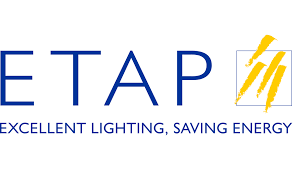
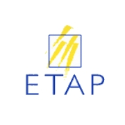
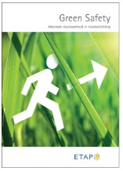
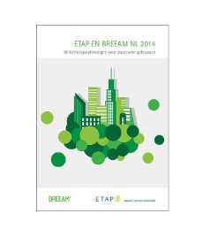
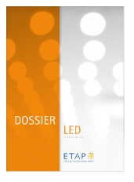

Huisstijl ETAP:
Al sinds 1996 gebruikt het bedrijf ETAP Lighting een logo. Het logo zag er niet altijd hetzelfde uit maar erg veel verschilde ze ook niet. De kleuren die altijd terugkomen in de huisstijl van dit bedrijf zijn blauw en geel. Blauw is de kleur die al sinds het begin gebruikt wordt, ze hebben deze dan ook gewoon behouden. De kleur geel hebben ze gekozen omdat het licht een gele kleur heeft. In het logo zijn de woorden en de kader blauw en de strepen geel. De gele strepen stellen lichtflitsen voor. Maar zelf voor het bedrijf een logo had, gebruikte ze deze kleuren al voor initialen. Voor het logo ingevoerd werd in 1996, was het symbool dat ze gebruikte een soort van ‘s’. Het logo vind je overal terug maar in verschillende vormen. Tegenwoordig proberen ze wel zo veel mogelijk hetzelfde logo te gebruiken. Ze proberen ook overal dezelfde groottes van letters te nemen.

nieuwe logo

oude logo
Op een fluovest past het gewone logo niet zo goed dus nemen ze de zwarte versie van het logo, zo is er ook een witte versie en een grijze versie. Er zijn ook versie waar de tekst naast het logo staat en versies waar er geen tekst bij staat.
Vroeger werd op de noodverlichting het logo zonder de tekst gezet, maar tegenwoordig is men daar ook van afgestapt. Nu zet men het gewone logo er helemaal op.

Op de site zie je heel duidelijk dat steeds dezelfde kleuren terugkomen, de kleuren van de huisstijl. Aan de zijkant zie je bijvoorbeeld het geel en onderaan vind je het blauw. Maar het komt ook nog vaker terug op de site. De foto’s die gebruikt worden, zowel op de website als in de reclamefolders, worden altijd in dezelfde stijl genomen. Ze hebben bijna allemaal dezelfde grijze achtergrond. Eén jaar geleden heeft ETAP zijn website vernieuwd. Hiervoor was de huisstijl, buiten het logo, niet terug te vinden op de site. Het was een eenvoudige, groenachtige website.
De folders werden ook altijd in dezelfde stijl gemaakt. Ze hadden altijd boven- en onderaan een witte rand, altijd even groot. Hetzelfde voor de achterkant.

oude folder

nieuwe folder
Zelfs in het bedrijf zelf vind je de kleuren van de huisstijl een beetje terug. De zuilen in het gebouw zijn ook blauw.